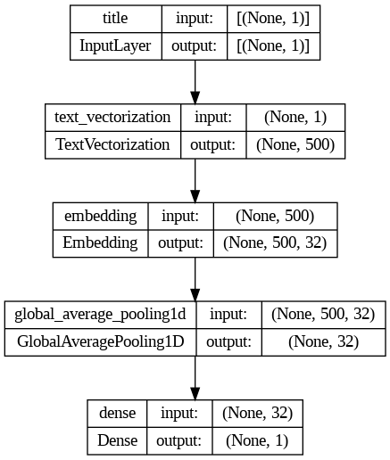
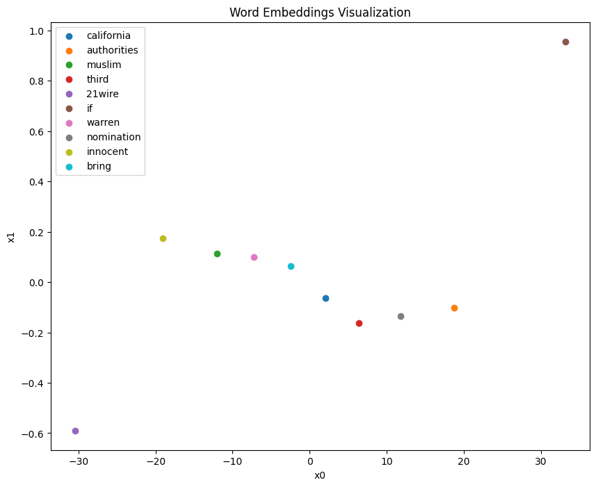

---
title: "HW 6, Fake News Classifications"
author: "Neomi Goodman"
date: "2024-03-11"
categories: [week 9, HW 6 ]
---In this blog we work with Keras to creat a model that can classify fake news. We will aquire data, creat a database, construct the models train them and evalute their accuracy before we also include some visualization. There is so much work to do so lets get started!
Step 1 : Acquire Training Data
To start off we will need to get data that contianes both fake and real news so we can train our model with it. For this blog we will use the article by Ahmed H. and Saad s 2017
(Ahmed H, Traore I, Saad S. (2017) “Detection of Online Fake News Using N-Gram Analysis and Machine Learning Techniques. In: Traore I., Woungang I., Awad A. (eds) Intelligent, Secure, and Dependable Systems in Distributed and Cloud Environments. ISDDC 2017. Lecture Notes in Computer Science, vol 10618. Springer, Cham (pp. 127-138).)
Feel free to using the same database to follow along with the blog post more easily.
First step is to import any package we might need for the creation of the model
import pandas as pd
import tensorflow as tf
from tensorflow.keras.layers.experimental.preprocessing import TextVectorization
import re
import string
from sklearn.model_selection import train_test_splitOnce we imported the pandas package we can creat the train_url variable with the url for our database csv and read the database into python by calling pd.read_csv()
train_url = "https://github.com/PhilChodrow/PIC16b/blob/master/datasets/fake_news_train.csv?raw=true"
train_df=pd.read_csv(train_url)
train_df| Unnamed: 0 | title | text | fake | |
|---|---|---|---|---|
| 0 | 17366 | Merkel: Strong result for Austria's FPO 'big c... | German Chancellor Angela Merkel said on Monday... | 0 |
| 1 | 5634 | Trump says Pence will lead voter fraud panel | WEST PALM BEACH, Fla.President Donald Trump sa... | 0 |
| 2 | 17487 | JUST IN: SUSPECTED LEAKER and “Close Confidant... | On December 5, 2017, Circa s Sara Carter warne... | 1 |
| 3 | 12217 | Thyssenkrupp has offered help to Argentina ove... | Germany s Thyssenkrupp, has offered assistance... | 0 |
| 4 | 5535 | Trump say appeals court decision on travel ban... | President Donald Trump on Thursday called the ... | 0 |
| ... | ... | ... | ... | ... |
| 22444 | 10709 | ALARMING: NSA Refuses to Release Clinton-Lynch... | If Clinton and Lynch just talked about grandki... | 1 |
| 22445 | 8731 | Can Pence's vow not to sling mud survive a Tru... | () - In 1990, during a close and bitter congre... | 0 |
| 22446 | 4733 | Watch Trump Campaign Try To Spin Their Way Ou... | A new ad by the Hillary Clinton SuperPac Prior... | 1 |
| 22447 | 3993 | Trump celebrates first 100 days as president, ... | HARRISBURG, Pa.U.S. President Donald Trump hit... | 0 |
| 22448 | 12896 | TRUMP SUPPORTERS REACT TO DEBATE: “Clinton New... | MELBOURNE, FL is a town with a population of 7... | 1 |
22449 rows × 4 columns
As you can see we are working with a table that three main columes that we will be working with. The title column includes the title of the article, the text column provides us with the entier artcile text, while the last column, fake, tells us if the artcile has fake news or is real. 0 for true and 1 for fake news.
Now we can start creating a dataset, lets get started
Step 2: Make a Dataset
We will creat a function called make_dataset which will do three things
The function will change all the text to lowercase,remove any stopwords( unimportant or essential words), and lastly construct and retrun a tf.data.Dataset which will have to two inputs and one output. This might seem like a lot but don’t worry we will break it down and go step by step.
To first start we need to import the nltk package and get the stopwords from the nltk.corpus libary to make the function easier to create. nltk. download, downloads the list of English stopwords (common words that are usually removed in the preprocessing steps of text analysis because they carry less meaningful information for analysis, e.g., “the”, “is”, “in”). Now we are ready to start working on the function.
The first step is to convert all the article text and title text to lowercase as it would impact the way the words are seen. Mor specifcially, the model views “Hello” and “hello” to be diffrent things which will make us have to work double as much.
The stopword removal step is integrated directly into the apply method calls for both the ‘text’ and ‘title’ columns. A lambda function is used to iterate over each word in the input text, filter out stopwords, and then join the remaining words back into a single string.
We then creat a TensorFlow dataset from the preprocessed ‘text’ and ‘title’ columns along with the target ‘fake’ column. This dataset is suitable for feeding into a machine learning model built with TensorFlow. Let’s break down how to do it.
tf.data.Dataset.from_tensor_slices(…) if a TensorFlow function which creates a Dataset object from tensor slices. It is meant to handel large amounts of data in an efficent manner and allows you to batch and shuffle the data in a very simple manner. “from_tensor_slices” is a tuple with two elements, thje first is the text and title keys- each corresponding to a numpy array from the training_df and conatine all the values from the colum. The second tuple has the keys of wether the text is false or not. Lastly, dataset.batch(100) batchs consective elemnts of the datasets. It is important we batch as it is as it allows for parallel computation over the batch, reducing training time. It also helps with memory management, as it limits the amount of data loaded into memory at once.
import nltk
from nltk.corpus import stopwords
nltk.download('stopwords')
stop_words = set(stopwords.words('english'))
def make_dataset(df):
"""
Preprocesses the input DataFrame by converting text to lowercase, removing stopwords,
and constructing a TensorFlow dataset.
Parameters:
- train_df: A pandas DataFrame with columns 'text', 'title', and 'fake'.
Returns:
- A batched TensorFlow dataset containing preprocessed text and titles as features
and 'fake' column values as labels.
"""
# Convert text to lowercase
train_df['text'] = train_df['text'].str.lower()
train_df['title'] = train_df['title'].str.lower()
# Directly remove stopwords from text and title using a lambda function
train_df['text'] = train_df['text'].apply(lambda input_text: " ".join([word for word in input_text.split() if word not in stop_words]))
train_df['title'] = train_df['title'].apply(lambda input_text: " ".join([word for word in input_text.split() if word not in stop_words]))
# Construct the dataset
dataset = tf.data.Dataset.from_tensor_slices((
{"title": train_df['title'].values, "text": train_df['text'].values},
train_df['fake'].values
))
# Batch the dataset
dataset = dataset.batch(100)
return dataset[nltk_data] Downloading package stopwords to /root/nltk_data...
[nltk_data] Unzipping corpora/stopwords.zip.Spliting data: get validation data
Now that we have created our main dataset we can go ahead and split off 20% of our data to use for validation. When creating a model it is important to divided you data, so you cna use some of it to train and some to test. The pourpose of this is so when you finish training you model you can test your model on data that it has not yet been exposed to.
In the code below I show how to split the dataset. The make_dataset function further processes these subsets by cleaning and organizing the data into a structured format that TensorFlow models can work with directly. This process ensures that the model can be trained effectively and evaluated on unseen data, helping to gauge its performance and generalizeability.
train_test_split(train_df, test_size=0.2, random_state=42) splits out dataset into two part, one for training and one for validation. test_size=0.2 indicates that 20% of the data will be set for the valdiation and 80% will be used for training.
make_dataset(train_df) calls the make_dataset function which we created above on the training DataFrame train_df. It preprocesses the text data and constructs a TensorFlow dataset which is batched and returned, ready for model training.
make_dataset(val_df) Similarly, calls the make_dataset function on the validation DataFrame val_df. It undergoes the same preprocessing and is also returned as a batched TensorFlow dataset, ready for model validation.
# Split the dataset for training and validation
train_df, val_df = train_test_split(train_df, test_size=0.2, random_state=42)
train_dataset = make_dataset(train_df)
val_dataset = make_dataset(val_df)Base Rate
Next to be able to measure our progress and test the accuracy of the model we need to establish a base accuracy rate. We will determine the vase rate for this data set by examining the labels on the training set. When we run the code we see that our start rate is 52% which is a good start. Now lets
base_rate = train_df['fake'].value_counts(normalize=True).max()
print(f"Base rate: {base_rate:.2f}")Base rate: 0.52TextVectorization
When we creat machine learning models they work with numerical data rather, howvere since our database examines artciles we currently have raw text. Therefore, we need to creat a textvectorization layer to transform the text into a format that our model can use to train on. Let’s breakdown how to creat such a layer.
1st step: we need to set a maximum number of words to keep in the vocabulary. For this model we will consider the top 2,000 most frequent words in the dataset which should cover in our instances all if not most words.
2nd step: We creat a function that defines a custom standarization to preprocess text data. It converst all the text to lowercase and removes any punctation. It is important we due thois as it helps limit unnecessary variability within our data and makes it easier for our models to learn better.
3rd step: We then creat an instance of the TextVectorization layer using the previously defined standardization function. This converts text into numerical data that can be fed into a TensorFlow model. The max_tokens Sets the size of the vocabulary to the value of size_vocabulary and the output_mode=‘int’ has the layer output integer indices representing the words in the vocabulary. Lastly, output_sequence_length=500 ensures that all output sequences have a fixed length of 500 tokens.In the case that the text is shorter zeros will be added to it.
4th step:The last step is to fit the layer to the training data using adapt. It learns the vocabulary from the ‘title’ field of the training dataset.
#preparing a text vectorization layer for tf model
size_vocabulary = 2000
def standardization(input_data):
lowercase = tf.strings.lower(input_data)
no_punctuation = tf.strings.regex_replace(lowercase,
'[%s]' % re.escape(string.punctuation),'')
return no_punctuation
title_vectorize_layer = TextVectorization(
standardize=standardization,
max_tokens=size_vocabulary, # only consider this many words
output_mode='int',
output_sequence_length=500)
title_vectorize_layer.adapt(train_dataset.map(lambda x, y: x["title"]))We can now do the exact same things for the the text
text_vectorize_layer = TextVectorization(
standardize=standardization,
max_tokens=size_vocabulary, # only consider this many words
output_mode='int',
output_sequence_length=500)
text_vectorize_layer.adapt(train_dataset.map(lambda x, y: x["text"]))Step 3: Create models
Next step is to creat a model that will detect if the news are fake or not. We will actually creat three models. One will use only use the artcile title as input, one will only use artical text as input, and the last one will use both article title and text as input. We are creating the three models so we could determine wether it is most effective to look at the title, full text or both when trying to detect fake news.
We have a lot of wrok ahead of us lets get started!
Model 1: only article title as input
Like before we are going to need to import some more packages that will be used in creating the model. From tensorflow.keras we are importing Model which is used to instantiate a new model, and Input which is used to specify the input layer of the model.Dense and GlobalAveragePooling1D layers are also imported from tensorflow.keras.layers. Dense is a fully connected neural network layer, and GlobalAveragePooling1D is used for pooling operations.
The first step in creating a the model is creating an embedding layer which is important for processing tect in neural networks. It turns positive integers (indexes) into dense vectors of fixed size (output_dim). The first parameter, input_dim, is the size of the vocabulary (size_vocabulary) plus one, accounting for the zero padding ( as we mentioned before that zeros will be added if its too short). This layer is later applied to the vectorized titles.
title_input is created to accept a single string every time which denotes the title of the article. We need to include this to specifies the shape and data type of the input the model will recive. We then pass the title_input through the textvectorization layer we created above to convert the strings into the sequences of integeres that our model can process. We then send it through the embedding layer which converst the sequence of integers into a sequence of dense vectors.
We then creat the GlobalAveragePooling1D layer pools the features by taking the average across the sequence dimension of the embeddings, reducing the output to a fixed-length vector. This condense the information from the entire title into a format suitable for the prediction layer, making it easier to process by the network.
We then creat the dense layer which ensures the output is between 0 and 1 and can be used for binary classification task.
We then define the model with the specifc input and output and are ready to compile the model. The model is compiled with the Adam optimizer and binary_crossentropy loss function, which is appropriate for binary classification tasks.
from tensorflow.keras import Model, Input
from tensorflow.keras.layers import Dense, GlobalAveragePooling1D
embedding_layer = tf.keras.layers.Embedding(input_dim=size_vocabulary + 1, output_dim=32)
# Input layer for titles
title_input = Input(shape=(1,), dtype='string', name='title')
title_vectorized = title_vectorize_layer(title_input)
title_embedded = embedding_layer(title_vectorized)
title_features = GlobalAveragePooling1D()(title_embedded)
# Prediction layer
predictions = Dense(1, activation='sigmoid')(title_features)
# Define the model
model_title = Model(inputs=title_input, outputs=predictions)
model_title.compile(optimizer='adam',
loss='binary_crossentropy',
metrics=['accuracy'])
# Fit the model
model_title.fit(train_dataset, validation_data=val_dataset, epochs=20)Epoch 1/20
180/180 [==============================] - 3s 13ms/step - loss: 0.6910 - accuracy: 0.5212 - val_loss: 0.6895 - val_accuracy: 0.5222
Epoch 2/20
180/180 [==============================] - 2s 12ms/step - loss: 0.6867 - accuracy: 0.5358 - val_loss: 0.6836 - val_accuracy: 0.7778
Epoch 3/20
180/180 [==============================] - 3s 15ms/step - loss: 0.6776 - accuracy: 0.6081 - val_loss: 0.6711 - val_accuracy: 0.8611
Epoch 4/20
180/180 [==============================] - 3s 15ms/step - loss: 0.6614 - accuracy: 0.7015 - val_loss: 0.6508 - val_accuracy: 0.8598
Epoch 5/20
180/180 [==============================] - 2s 12ms/step - loss: 0.6379 - accuracy: 0.7919 - val_loss: 0.6237 - val_accuracy: 0.8624
Epoch 6/20
180/180 [==============================] - 3s 16ms/step - loss: 0.6085 - accuracy: 0.8370 - val_loss: 0.5918 - val_accuracy: 0.8659
Epoch 7/20
180/180 [==============================] - 3s 15ms/step - loss: 0.5754 - accuracy: 0.8546 - val_loss: 0.5575 - val_accuracy: 0.8700
Epoch 8/20
180/180 [==============================] - 2s 12ms/step - loss: 0.5409 - accuracy: 0.8657 - val_loss: 0.5230 - val_accuracy: 0.8738
Epoch 9/20
180/180 [==============================] - 3s 17ms/step - loss: 0.5071 - accuracy: 0.8714 - val_loss: 0.4901 - val_accuracy: 0.8766
Epoch 10/20
180/180 [==============================] - 2s 12ms/step - loss: 0.4753 - accuracy: 0.8751 - val_loss: 0.4596 - val_accuracy: 0.8799
Epoch 11/20
180/180 [==============================] - 2s 12ms/step - loss: 0.4461 - accuracy: 0.8774 - val_loss: 0.4319 - val_accuracy: 0.8830
Epoch 12/20
180/180 [==============================] - 2s 12ms/step - loss: 0.4198 - accuracy: 0.8812 - val_loss: 0.4070 - val_accuracy: 0.8852
Epoch 13/20
180/180 [==============================] - 3s 16ms/step - loss: 0.3963 - accuracy: 0.8841 - val_loss: 0.3848 - val_accuracy: 0.8877
Epoch 14/20
180/180 [==============================] - 3s 16ms/step - loss: 0.3752 - accuracy: 0.8873 - val_loss: 0.3648 - val_accuracy: 0.8909
Epoch 15/20
180/180 [==============================] - 2s 11ms/step - loss: 0.3562 - accuracy: 0.8917 - val_loss: 0.3468 - val_accuracy: 0.8951
Epoch 16/20
180/180 [==============================] - 2s 12ms/step - loss: 0.3390 - accuracy: 0.8953 - val_loss: 0.3305 - val_accuracy: 0.8988
Epoch 17/20
180/180 [==============================] - 2s 12ms/step - loss: 0.3234 - accuracy: 0.8994 - val_loss: 0.3156 - val_accuracy: 0.9018
Epoch 18/20
180/180 [==============================] - 4s 19ms/step - loss: 0.3092 - accuracy: 0.9033 - val_loss: 0.3019 - val_accuracy: 0.9045
Epoch 19/20
180/180 [==============================] - 3s 14ms/step - loss: 0.2961 - accuracy: 0.9062 - val_loss: 0.2894 - val_accuracy: 0.9088
Epoch 20/20
180/180 [==============================] - 3s 15ms/step - loss: 0.2841 - accuracy: 0.9091 - val_loss: 0.2778 - val_accuracy: 0.9112/usr/local/lib/python3.10/dist-packages/keras/src/engine/functional.py:642: UserWarning: Input dict contained keys ['text'] which did not match any model input. They will be ignored by the model.
inputs = self._flatten_to_reference_inputs(inputs)<keras.src.callbacks.History at 0x7f0d875bfb80>The validation accuracy predictions look pretty good !! The went from 50% all the way up to 90% With the majority of the rounds being in the mid to high 80% !! So far using the title for accuracy seems like a very good option and helps us creat a strong model
from keras import utils
utils.plot_model(model_title,
show_shapes=True,
show_layer_names=True)
Model 2: only article text an input
For the second model we will follow the same tasks as the first model but simply shift from the title to text.
embedding_layer = tf.keras.layers.Embedding(input_dim=size_vocabulary + 1, output_dim=32)
# Input layer for titles
text_input = Input(shape=(1,), dtype='string', name='text')
text_vectorize = text_vectorize_layer(text_input)
text_embedded = embedding_layer(text_vectorize)
text_features = GlobalAveragePooling1D()(text_embedded)
# Prediction layer
predictions = Dense(1, activation='sigmoid')(text_features)
# Define the model
model_text = Model(inputs=text_input, outputs=predictions)
model_text.compile(optimizer='adam',
loss='binary_crossentropy',
metrics=['accuracy'])# Fit the model
model_text.fit(train_dataset, validation_data=val_dataset, epochs=20)Epoch 1/20
180/180 [==============================] - 7s 29ms/step - loss: 0.6661 - accuracy: 0.5939 - val_loss: 0.6237 - val_accuracy: 0.8799
Epoch 2/20
180/180 [==============================] - 6s 32ms/step - loss: 0.5584 - accuracy: 0.8868 - val_loss: 0.4901 - val_accuracy: 0.9186
Epoch 3/20
180/180 [==============================] - 5s 30ms/step - loss: 0.4326 - accuracy: 0.9269 - val_loss: 0.3814 - val_accuracy: 0.9399
Epoch 4/20
180/180 [==============================] - 6s 31ms/step - loss: 0.3443 - accuracy: 0.9372 - val_loss: 0.3114 - val_accuracy: 0.9471
Epoch 5/20
180/180 [==============================] - 6s 35ms/step - loss: 0.2873 - accuracy: 0.9458 - val_loss: 0.2650 - val_accuracy: 0.9530
Epoch 6/20
180/180 [==============================] - 4s 25ms/step - loss: 0.2483 - accuracy: 0.9528 - val_loss: 0.2320 - val_accuracy: 0.9569
Epoch 7/20
180/180 [==============================] - 6s 31ms/step - loss: 0.2198 - accuracy: 0.9575 - val_loss: 0.2072 - val_accuracy: 0.9611
Epoch 8/20
180/180 [==============================] - 5s 30ms/step - loss: 0.1978 - accuracy: 0.9618 - val_loss: 0.1877 - val_accuracy: 0.9644
Epoch 9/20
180/180 [==============================] - 4s 24ms/step - loss: 0.1803 - accuracy: 0.9650 - val_loss: 0.1719 - val_accuracy: 0.9679
Epoch 10/20
180/180 [==============================] - 6s 35ms/step - loss: 0.1659 - accuracy: 0.9682 - val_loss: 0.1587 - val_accuracy: 0.9704
Epoch 11/20
180/180 [==============================] - 5s 27ms/step - loss: 0.1538 - accuracy: 0.9707 - val_loss: 0.1476 - val_accuracy: 0.9720
Epoch 12/20
180/180 [==============================] - 5s 30ms/step - loss: 0.1435 - accuracy: 0.9726 - val_loss: 0.1380 - val_accuracy: 0.9730
Epoch 13/20
180/180 [==============================] - 5s 29ms/step - loss: 0.1346 - accuracy: 0.9739 - val_loss: 0.1296 - val_accuracy: 0.9742
Epoch 14/20
180/180 [==============================] - 5s 29ms/step - loss: 0.1267 - accuracy: 0.9744 - val_loss: 0.1223 - val_accuracy: 0.9753
Epoch 15/20
180/180 [==============================] - 5s 29ms/step - loss: 0.1198 - accuracy: 0.9756 - val_loss: 0.1157 - val_accuracy: 0.9761
Epoch 16/20
180/180 [==============================] - 5s 29ms/step - loss: 0.1136 - accuracy: 0.9766 - val_loss: 0.1098 - val_accuracy: 0.9774
Epoch 17/20
180/180 [==============================] - 6s 33ms/step - loss: 0.1079 - accuracy: 0.9776 - val_loss: 0.1044 - val_accuracy: 0.9784
Epoch 18/20
180/180 [==============================] - 4s 24ms/step - loss: 0.1028 - accuracy: 0.9783 - val_loss: 0.0996 - val_accuracy: 0.9796
Epoch 19/20
180/180 [==============================] - 5s 29ms/step - loss: 0.0982 - accuracy: 0.9793 - val_loss: 0.0951 - val_accuracy: 0.9800
Epoch 20/20
180/180 [==============================] - 5s 29ms/step - loss: 0.0939 - accuracy: 0.9803 - val_loss: 0.0910 - val_accuracy: 0.9811/usr/local/lib/python3.10/dist-packages/keras/src/engine/functional.py:642: UserWarning: Input dict contained keys ['title'] which did not match any model input. They will be ignored by the model.
inputs = self._flatten_to_reference_inputs(inputs)<keras.src.callbacks.History at 0x7f0d89c03640>Look at that validation accuracy predictions !! I thought the ones before were good, but these atre even high with almost all the validation accuracy being in the high 90%. This makes it look like using the text to train and creat the model is far more efficent and accurat than using the title
from keras import utils
utils.plot_model(model_title, "output_filename.png",
show_shapes=True,
show_layer_names=True)
Model 3: both the article title and article text as inputs
For the last model we combine and account for both trhe text and the title when trying to determine if the information is true or false. We follow similar direction as model 1 and 2 yet this time we use concatenate to get both the title_feature and the text_feature.
# Combine title and text features
combined_features = tf.keras.layers.concatenate([title_features, text_features])
# Prediction layer
predictions = Dense(1, activation='sigmoid')(combined_features)
# Define the model
model_combined = Model(inputs=[title_input, text_input], outputs=predictions)
model_combined.compile(optimizer='adam',
loss='binary_crossentropy',
metrics=['accuracy'])
model_combined.fit(train_dataset, validation_data=val_dataset, epochs=20)Epoch 1/20
180/180 [==============================] - 10s 48ms/step - loss: 0.6250 - accuracy: 0.7136 - val_loss: 0.5157 - val_accuracy: 0.9821
Epoch 2/20
180/180 [==============================] - 6s 34ms/step - loss: 0.4371 - accuracy: 0.9798 - val_loss: 0.3690 - val_accuracy: 0.9817
Epoch 3/20
180/180 [==============================] - 6s 33ms/step - loss: 0.3197 - accuracy: 0.9803 - val_loss: 0.2773 - val_accuracy: 0.9806
Epoch 4/20
180/180 [==============================] - 5s 29ms/step - loss: 0.2468 - accuracy: 0.9794 - val_loss: 0.2199 - val_accuracy: 0.9800
Epoch 5/20
180/180 [==============================] - 5s 29ms/step - loss: 0.2002 - accuracy: 0.9798 - val_loss: 0.1822 - val_accuracy: 0.9801
Epoch 6/20
180/180 [==============================] - 6s 35ms/step - loss: 0.1687 - accuracy: 0.9801 - val_loss: 0.1559 - val_accuracy: 0.9806
Epoch 7/20
180/180 [==============================] - 8s 43ms/step - loss: 0.1461 - accuracy: 0.9809 - val_loss: 0.1365 - val_accuracy: 0.9815
Epoch 8/20
180/180 [==============================] - 6s 31ms/step - loss: 0.1291 - accuracy: 0.9817 - val_loss: 0.1215 - val_accuracy: 0.9821
Epoch 9/20
180/180 [==============================] - 6s 31ms/step - loss: 0.1158 - accuracy: 0.9825 - val_loss: 0.1096 - val_accuracy: 0.9831
Epoch 10/20
180/180 [==============================] - 7s 40ms/step - loss: 0.1050 - accuracy: 0.9832 - val_loss: 0.0998 - val_accuracy: 0.9839
Epoch 11/20
180/180 [==============================] - 6s 36ms/step - loss: 0.0961 - accuracy: 0.9840 - val_loss: 0.0916 - val_accuracy: 0.9847
Epoch 12/20
180/180 [==============================] - 7s 41ms/step - loss: 0.0885 - accuracy: 0.9847 - val_loss: 0.0846 - val_accuracy: 0.9852
Epoch 13/20
180/180 [==============================] - 8s 46ms/step - loss: 0.0819 - accuracy: 0.9852 - val_loss: 0.0784 - val_accuracy: 0.9858
Epoch 14/20
180/180 [==============================] - 12s 65ms/step - loss: 0.0762 - accuracy: 0.9856 - val_loss: 0.0731 - val_accuracy: 0.9865
Epoch 15/20
180/180 [==============================] - 6s 34ms/step - loss: 0.0711 - accuracy: 0.9865 - val_loss: 0.0683 - val_accuracy: 0.9874
Epoch 16/20
180/180 [==============================] - 10s 56ms/step - loss: 0.0666 - accuracy: 0.9874 - val_loss: 0.0640 - val_accuracy: 0.9879
Epoch 17/20
180/180 [==============================] - 10s 54ms/step - loss: 0.0625 - accuracy: 0.9879 - val_loss: 0.0602 - val_accuracy: 0.9883
Epoch 18/20
180/180 [==============================] - 6s 33ms/step - loss: 0.0589 - accuracy: 0.9884 - val_loss: 0.0567 - val_accuracy: 0.9888
Epoch 19/20
180/180 [==============================] - 7s 42ms/step - loss: 0.0555 - accuracy: 0.9888 - val_loss: 0.0534 - val_accuracy: 0.9890
Epoch 20/20
180/180 [==============================] - 7s 36ms/step - loss: 0.0524 - accuracy: 0.9894 - val_loss: 0.0505 - val_accuracy: 0.9899<keras.src.callbacks.History at 0x7f0d897aff70>The validation accuracy is alsmot 2% higher than the validation accuracy of the modle that only used text to train. This proves that using both text and title of artcle helps creat the most accurate model. Just to comap
Model Evaluation
Now that we have tested the three modles we are ready to use the most efficent model, model three, and run it with our testing data. We will do this by importing the test data and follow the same step as we did with teh training datat. We will use read_csv to read and download the data and creat a teast_df database. We would then apply the make_dataset function to the new dataset and textvectornized it to make sure that it can go through our model. Omce that is done we send it through oiur third model as it proved to be the most effictive with the highest sucesses rate.
test_url = "https://github.com/PhilChodrow/PIC16b/blob/master/datasets/fake_news_test.csv?raw=true"
test_df=pd.read_csv(train_url)test2_dataset = make_dataset(test_df)
test1_vectorize_layer = TextVectorization(
standardize=standardization,
max_tokens=size_vocabulary, # only consider this many words
output_mode='int',
output_sequence_length=500)
test1_vectorize_layer.adapt(test2_dataset.map(lambda x, y: x["title"]))
test2_vectorize_layer = TextVectorization(
standardize=standardization,
max_tokens=size_vocabulary, # only consider this many words
output_mode='int',
output_sequence_length=500)
test2_vectorize_layer.adapt(test2_dataset.map(lambda x, y: x["text"]))# Combine title and text features
combined_features = tf.keras.layers.concatenate([title_features, text_features])
# Prediction layer
predictions = Dense(1, activation='sigmoid')(combined_features)
# Define the model
model_combined = Model(inputs=[title_input, text_input], outputs=predictions)
model_combined.compile(optimizer='adam',
loss='binary_crossentropy',
metrics=['accuracy'])
model_combined.fit(test2_dataset, validation_data=val_dataset, epochs=20)Epoch 1/20
180/180 [==============================] - 7s 34ms/step - loss: 0.4910 - accuracy: 0.9796 - val_loss: 0.3699 - val_accuracy: 0.9939
Epoch 2/20
180/180 [==============================] - 6s 35ms/step - loss: 0.3005 - accuracy: 0.9933 - val_loss: 0.2453 - val_accuracy: 0.9931
Epoch 3/20
180/180 [==============================] - 6s 31ms/step - loss: 0.2100 - accuracy: 0.9923 - val_loss: 0.1805 - val_accuracy: 0.9923
Epoch 4/20
180/180 [==============================] - 6s 33ms/step - loss: 0.1601 - accuracy: 0.9917 - val_loss: 0.1421 - val_accuracy: 0.9917
Epoch 5/20
180/180 [==============================] - 7s 39ms/step - loss: 0.1291 - accuracy: 0.9915 - val_loss: 0.1172 - val_accuracy: 0.9916
Epoch 6/20
180/180 [==============================] - 6s 34ms/step - loss: 0.1083 - accuracy: 0.9914 - val_loss: 0.0998 - val_accuracy: 0.9917
Epoch 7/20
180/180 [==============================] - 6s 34ms/step - loss: 0.0934 - accuracy: 0.9915 - val_loss: 0.0870 - val_accuracy: 0.9919
Epoch 8/20
180/180 [==============================] - 6s 34ms/step - loss: 0.0822 - accuracy: 0.9916 - val_loss: 0.0771 - val_accuracy: 0.9919
Epoch 9/20
180/180 [==============================] - 6s 36ms/step - loss: 0.0733 - accuracy: 0.9918 - val_loss: 0.0693 - val_accuracy: 0.9921
Epoch 10/20
180/180 [==============================] - 5s 30ms/step - loss: 0.0662 - accuracy: 0.9921 - val_loss: 0.0628 - val_accuracy: 0.9925
Epoch 11/20
180/180 [==============================] - 7s 38ms/step - loss: 0.0603 - accuracy: 0.9923 - val_loss: 0.0574 - val_accuracy: 0.9926
Epoch 12/20
180/180 [==============================] - 7s 40ms/step - loss: 0.0554 - accuracy: 0.9924 - val_loss: 0.0529 - val_accuracy: 0.9928
Epoch 13/20
180/180 [==============================] - 6s 33ms/step - loss: 0.0511 - accuracy: 0.9929 - val_loss: 0.0489 - val_accuracy: 0.9931
Epoch 14/20
180/180 [==============================] - 6s 36ms/step - loss: 0.0474 - accuracy: 0.9930 - val_loss: 0.0454 - val_accuracy: 0.9935
Epoch 15/20
180/180 [==============================] - 6s 35ms/step - loss: 0.0442 - accuracy: 0.9933 - val_loss: 0.0424 - val_accuracy: 0.9938
Epoch 16/20
180/180 [==============================] - 5s 30ms/step - loss: 0.0413 - accuracy: 0.9936 - val_loss: 0.0396 - val_accuracy: 0.9942
Epoch 17/20
180/180 [==============================] - 6s 33ms/step - loss: 0.0387 - accuracy: 0.9938 - val_loss: 0.0372 - val_accuracy: 0.9944
Epoch 18/20
180/180 [==============================] - 9s 51ms/step - loss: 0.0363 - accuracy: 0.9941 - val_loss: 0.0349 - val_accuracy: 0.9946
Epoch 19/20
180/180 [==============================] - 7s 40ms/step - loss: 0.0342 - accuracy: 0.9944 - val_loss: 0.0329 - val_accuracy: 0.9948
Epoch 20/20
180/180 [==============================] - 6s 34ms/step - loss: 0.0322 - accuracy: 0.9947 - val_loss: 0.0311 - val_accuracy: 0.9949<keras.src.callbacks.History at 0x7f0d86020130>As we can see we git a really high accuracy of up to 99%. It seems like if we used this model to detect if a new artcile contained fake or true information we would probably be able to get right up to 99% of the time which means our model is really good.
Embedding Visualization
Now that we have run the model with our test data we can also make a visualization to get a better undertsnding of our model and the data that we use. We will use the embedding _layer we created earlier for this visualization.
embedding_matrix = embedding_layer.get_weights()[0]
print(embedding_matrix.shape)(2001, 32)We need to perefeom dimensionality reduction on an embeddings matrix using Principal Component Analysis (PCA), which is a technique from linear algebra used for the simplification of data while retaining most of the original variance.
To do this we need toi import teh needed packages and then creat an instances of PCA class with n_components 2 to specify that the embedded metrix should be reduced to 2. We then first fits the PCA model to the data in embedding_matrix, then transforms the data into the reduced space defined by the first two principal components. The embedding_matrix is expected to be a 2D numpy array where each row represents an embedding vector (for example, a word vector in the context of NLP tasks).
from sklearn.decomposition import PCA
# Reduce the embeddings to 2 dimensions
pca = PCA(n_components=2) # Use n_components=3 for 3D visualization
reduced_embeddings = pca.fit_transform(embedding_matrix)
print(reduced_embeddings.shape)(2001, 2)To visualize we start by reatriving the vocabulary from a ‘TextVectorization’ layer and creat a dictironaru mapping words to their indicies. We do thuis to locate the words within the emmbedding metrix. We chose to visualize the top 5 most frequent words. The norms (magnitudes) of each word’s embedding vector are computed. The indices of the words with the highest norms are identified, suggesting these words have the most “weight” or significance in the embedding space.The embedding vectors are clustered using the KMeans algorithm, with a specified number of clusters, and for each cluster, a representative word is chosen based on its proximity to the cluster center. We then creat a matplotlib figure to set up teh speace for the word embedding
import matplotlib.pyplot as plt
import numpy as np
vocab = text_vectorize_layer.get_vocabulary()
word_to_index = {word: idx for idx, word in enumerate(vocab)}
word_indices =[word_to_index[word] for word in words_to_visualize if word in word_to_index]
vocab_size = len(vocab)
num_words_to_visualize = 5
word_frequencies = {word: np.random.randint(1, 100) for word in word_to_index}
# Sort words by their frequency
sorted_words = sorted(word_frequencies, key=word_frequencies.get, reverse=True)
# Select the top N frequent words
words_to_visualize = sorted_words[:num_words_to_visualize]
# Calculate norms of each word's embedding
norms = np.linalg.norm(embedding_matrix, axis=1)
# Find indices of words with the highest norms
indices_high_norms = np.argsort(norms)[-num_words_to_visualize:]
words_to_visualize = [vocab[i] for i in indices_high_norms]
from sklearn.cluster import KMeans
# Cluster embeddings
num_clusters = 10
kmeans = KMeans(n_clusters=num_clusters, random_state=0).fit(embedding_matrix)
# For each cluster, pick one word near the center
words_to_visualize = []
for cluster_id in range(num_clusters):
# Find indices of words in this cluster
indices_in_cluster = np.where(kmeans.labels_ == cluster_id)[0]
# Pick one randomly or the one closest to the cluster center
representative_idx = indices_in_cluster[np.argmin(np.linalg.norm(embedding_matrix[indices_in_cluster] - kmeans.cluster_centers_[cluster_id], axis=1))]
words_to_visualize.append(vocab[representative_idx])
# Plot
plt.figure(figsize=(10, 8))
for word, index in zip(words_to_visualize, word_indices):
plt.scatter(reduced_embeddings[index, 0], reduced_embeddings[index, 1], label=word)
plt.legend()
plt.xlabel('x0')
plt.ylabel('x1')
plt.title('Word Embeddings Visualization')
plt.show()/usr/local/lib/python3.10/dist-packages/sklearn/cluster/_kmeans.py:870: FutureWarning: The default value of `n_init` will change from 10 to 'auto' in 1.4. Set the value of `n_init` explicitly to suppress the warning
warnings.warn(
The graph abopve shows the top five words that were used the most fequentlty! And this is it. It was long but overall not to bad you are now ready to go ahead and do this on your own with your dataset, good luck !